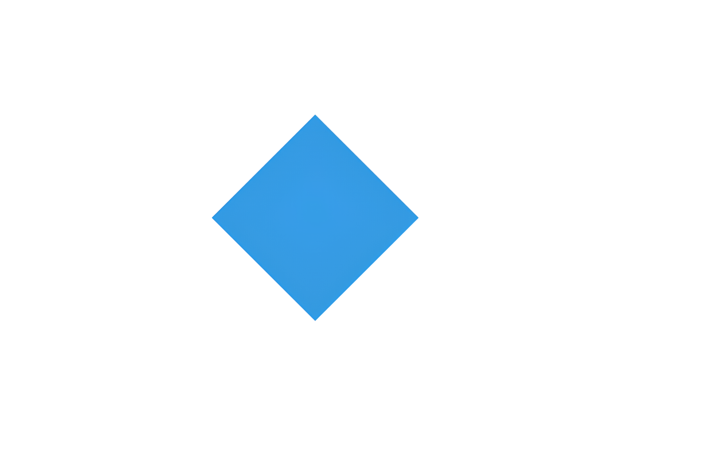
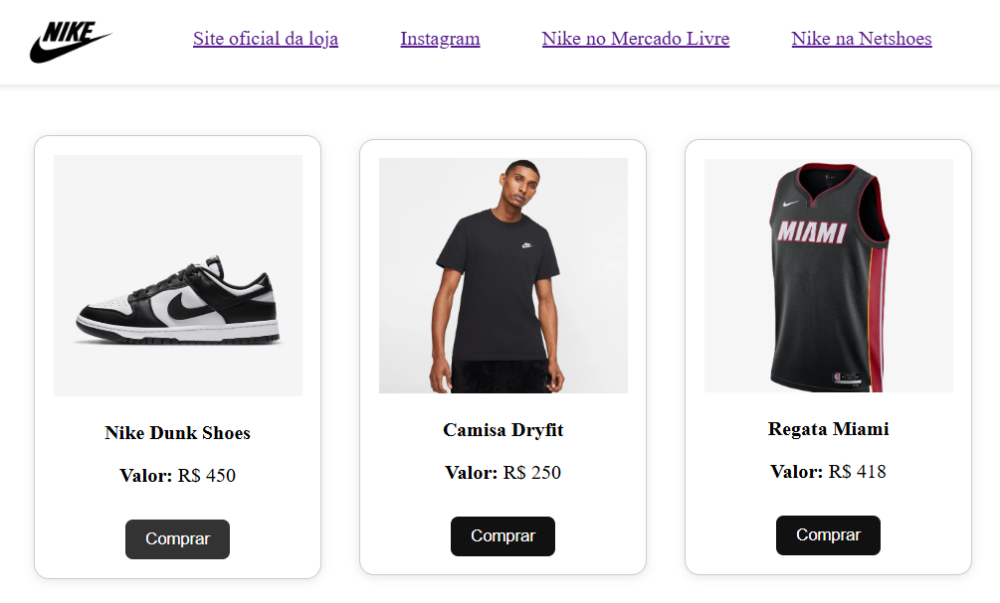

Sobre mim
Olá! Sou Mardones Sousa, desenvolvedor full-stack, com especialidade em JavaScript, HTML, CSS e MySQL. Tenho formação em andamento em Ciência da Computação e venho atuando em projetos que envolvem desde a criação de interfaces responsivas até o desenvolvimento de sistemas integrados.
Possuo conhecimento sólido em desenvolvimento web, tanto no front-end quanto no back-end, e estou constantemente em busca de novas tecnologias e boas práticas que contribuam para a criação de soluções eficientes, seguras e escaláveis.
Tenho facilidade para trabalhar em equipe, compreender demandas técnicas e propor soluções criativas com base em análise e lógica. Acredito na tecnologia como um meio de transformação e melhoria contínua de processos e experiências digitais.
Baixar CVProjetos
Animação com Transformações em WebGL
Este projeto demonstra como aplicar transformações geométricas para compor uma animação usando WebGL. Através da manipulação de matrizes, desenvolvi um quadrado que gira continuamente na tela, explorando conceitos fundamentais de renderização, como rotação. A proposta destaca o potencial do WebGL para criar gráficos interativos e animações em tempo real diretamente no navegador.
Visualizar no GitHub Visualizar ProjetoLayout de Cards de Produtos Nike
Este projeto foi desenvolvido com o objetivo de praticar conceitos de Flexbox no CSS. Criei um layout responsivo para um site de produtos da Nike, exibindo cards com imagens, descrições e botões de compra.
Habilidades
HARD SKILLS
JavaScript
HTML
CSS
MYSQL
GIT
SOFT SKILLS
Resolução de Problemas
Capacidade de identificar, analisar e resolver problemas de maneira eficaz.
Comunicação
Habilidade em transmitir ideias de forma clara e objetiva.
Trabalho em Equipe
Colaborar com diferentes perfis, respeitando opiniões.
Organização
Gerenciar bem o tempo, priorizar tarefas e manter estrutura.
Aprendizado contínuo
Interesse constante em evoluir, estudar novas linguagens, ferramentas e práticas.
Vamos conversar?